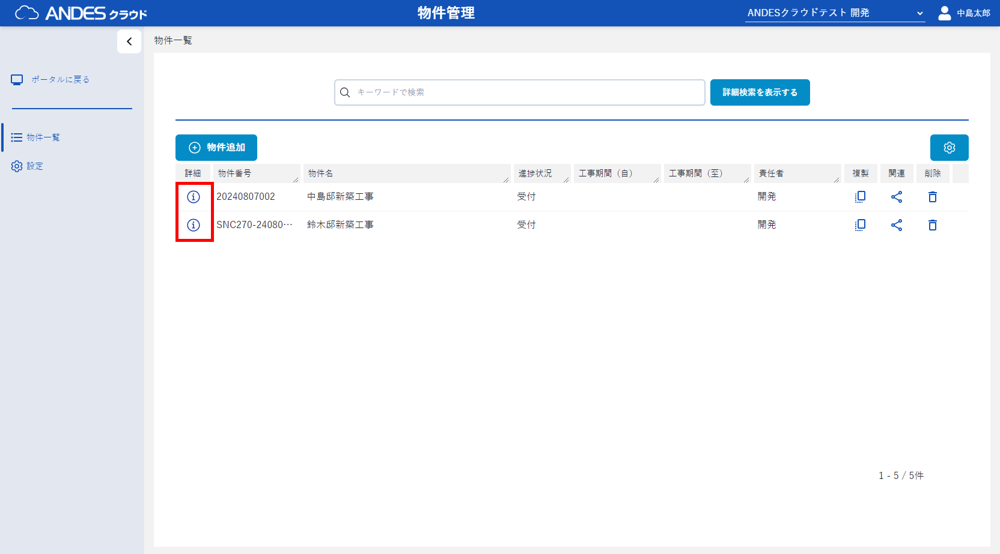
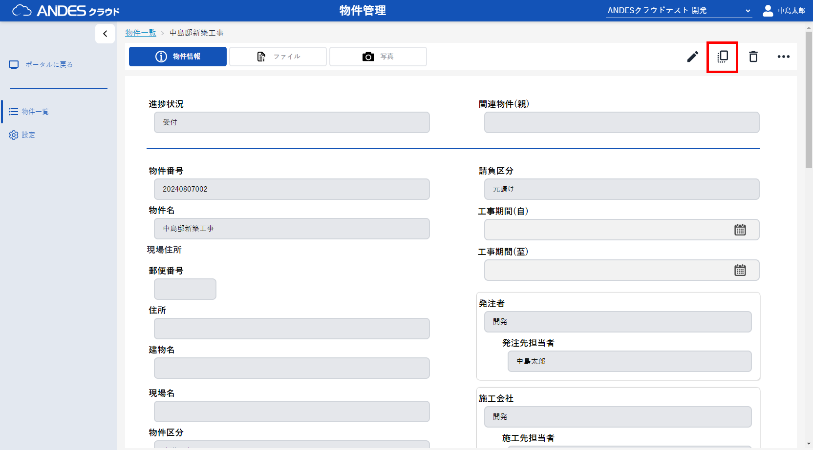

- 物件一覧画面で複製したい物件の 「」ボタン をクリックします。
-
物件情報の詳細画面から右上の
「
 」ボタン
をクリックします。
」ボタン
をクリックします。
- 表示されたダイアログの「部屋番号を指定して物件を複製する」チェックボックスをクリックします。
- 作成する部屋の範囲の数値、その他作成する内容を入力し、 「」ボタン をクリックします。
-
「作成」ボタンをクリックし、複製を作成します。
複製された物件は複製元の物件の子物件として登録されます。 - 登録完了後、複製元の物件の関連物件画面に遷移します。


ポイント
詳細設定を開くことで接頭語、接尾語、指定した番号の除外ができます。
ポイント
「 」ボタン
をクリックすることで、複製候補を削除することができます。
」ボタン
をクリックすることで、複製候補を削除することができます。
」ボタン
をクリックすることで、複製候補を削除することができます。
注意
複製元の物件に登録されているファイル、フォルダ、写真は複製されません。